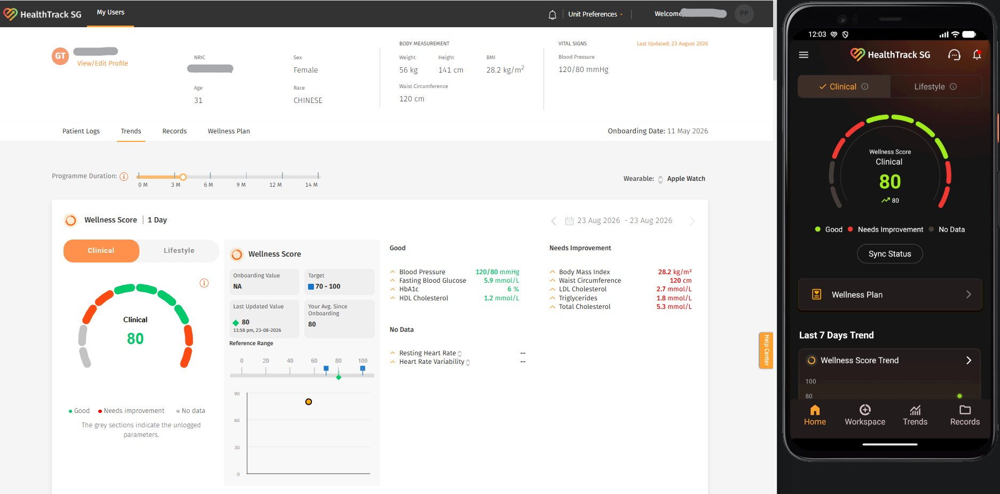

Overview
HealthTrack SG is a national digital health programme run by Singapore's Health Promotion Board, helping residents manage or reduce their risk of chronic conditions by combining wearable data, clinical records, and lifestyle insights into a single wellness score. The platform tracks 52+ biomarkers with real-time alerts and notification reminders, forming part of a broader national initiative to deliver person-centric, data-driven preventive health.
My role
I worked on QA for the platform end to end, from writing manual test cases against the product design, to testing the web app, to building out automation, API, and performance test coverage.
What I did
- Wrote manual test cases based on the product design and specifications, and managed them in Xray for real-time indexing and full visibility across the testing lifecycle.
- Tested the web application manually, logging and tracking defects as they surfaced.
- Reported and tracked bugs through resolution, working closely with developers to reproduce, prioritize, and verify fixes.
- Tested alert and notification reminder flows to ensure timely, accurate delivery across biomarker thresholds.
- Built automation coverage with Playwright for web and Maestro for mobile.
- Designed and executed API test suites in Postman, covering functional validation, data integrity, and edge cases across service endpoints.
- Built and ran load and performance tests using JMeter to validate system behavior under expected and peak user loads, identifying bottlenecks before release.
- Collaborated closely with developers, designers, and product managers to build a well-rounded, reliable product.
- Owned QA end to end for the project, planning, execution, and sign-off, helping the team consistently deliver a high-quality product.